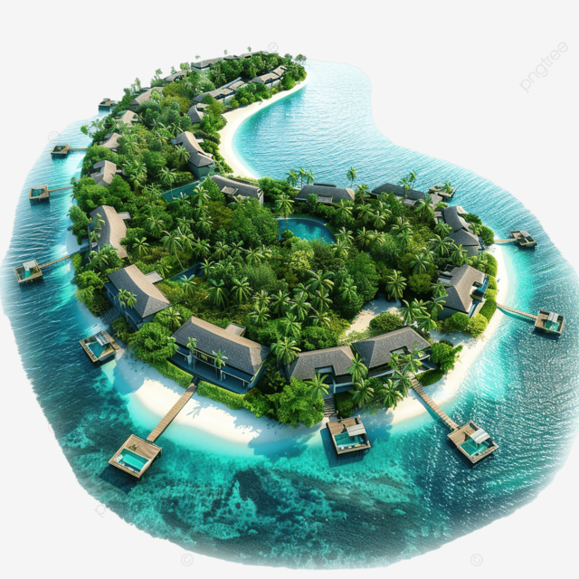
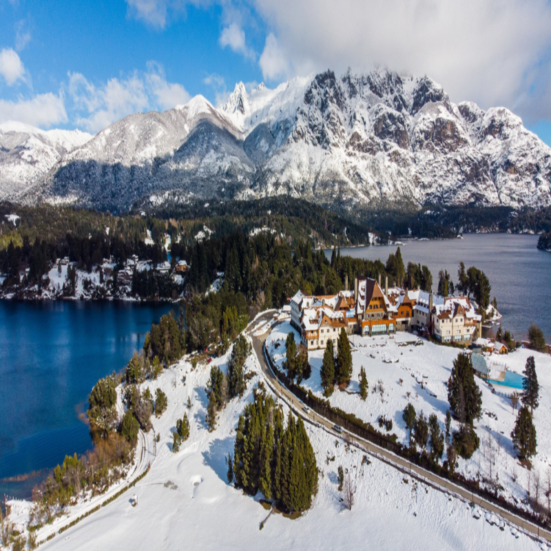

Destinos em Destaque


As Maldivas são um verdadeiro paraíso tropical, conhecidas por suas águas cristalinas, praias de areia branca e resorts luxuosos sobre o mar. É o destino ideal para quem busca tranquilidade, romance e experiências únicas em meio à natureza exuberante.
Bariloche, localizada na Patagônia argentina, é famosa por suas paisagens montanhosas, lagos deslumbrantes e estações de esqui. É um destino perfeito tanto para quem gosta de aventuras na neve quanto para quem deseja apreciar a gastronomia e o charme europeu da região.